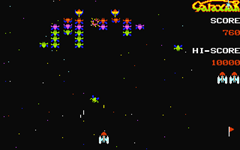
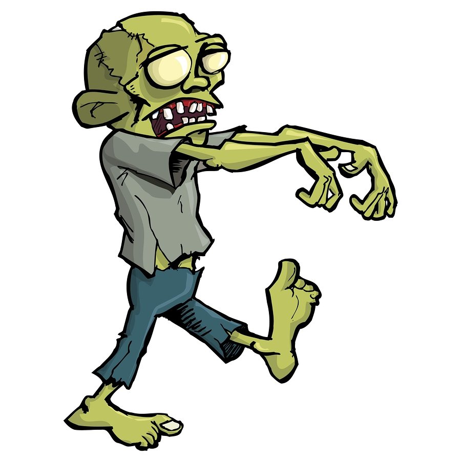

Home
Crash, Bang, Wallop! – Collisions
- Details
- Published on Wednesday, 13 July 2016 11:05
- Written by Edward Powell
- Hits: 169
This session we are going to add collision detection between our particles and make them ‘bounce’ off one another. This will actually come down to 3 separate tasks.
{kind=link}
Firstly we need to know when to particles have collided (collision testing, or detection).
Secondly we need to change the behaviour of the particles to respond to the collision - for now this will simply be to make them bounce apart.
Thirdly we need to catch a tricky problem common to all physics simulations – stickiness! Because we will be testing for collisions at discrete moments in time (whenever our collide function is called in the main game loop) there are going to be occasions where we have just missed the actual moment of collision. At this point our particles will be overlapping and begin to repeatedly trigger our collision test make the particles ‘bounce’ constantly in opposite directions each call – the visual effect of this will be to make the particles appear stuck together. To avoid this problem we will also add a bit of code to ensure that, in addition to causing the particles to bounce, we also make sure we remove any overlap.
Checking all the particles once, but only once!
Lets start with how we are going to call our collision code. Naively, for each particle we could just insert a second loop to check against the particle list particle by particle – but wait… A simple nested loop will actually check every *pair* of particles twice – A with B, and then later B with A. We want to avoid this duplication as well as avoid checking particles against themselves – A with A and B with B etc.
To achieve this we will use a modified internal loop that only checks the particle against the other particles *that are later in the list*. To do this we need to modify the way we loop through the list in the outer loop so that we can keep track of the position in the list of the particle we are currently checking. Find the existing update-draw loop for each particle and replace it with this code:
for i, particle in enumerate(my_particles):
particle.move()
particle.bounce()
for particle2 in my_particles[i+1:]:
collide(particle, particle2)
particle.display()
Can you see how this works? Enumerating the particle list means that the variable i will keep track of the index of each particle in the list as we iterate through it. We can use i to begin the nested for loop from 1 place further on in the list than the particle being tested. The function that we call – collide – will test to see if the pair of particles are in collision and act upon them if they are. Let’s look at that next.
Collision Testing & Handling
The collide function should be added under the existing findParticle function, before the Particle class definition. Here is the collision code in its entirety:
def collide(p1, p2):
dx = p1.x - p2.x
dy = p1.y - p2.y
dist = math.hypot(dx, dy)
if dist < p1.size + p2.size:
tangent = math.atan2(dy, dx)
angle = 0.5 * math.pi + tangent
angle1 = 2*tangent - p1.angle
angle2 = 2*tangent - p2.angle
speed1 = p2.speed*elasticity
speed2 = p1.speed*elasticity
(p1.angle, p1.speed) = (angle1, speed1)
(p2.angle, p2.speed) = (angle2, speed2)
# Move overlapping particles apart
separation = (p1.size + p2.size - dist) / 2.0
x_separation = math.sin(angle) * separation
y_separation = math.cos(angle) * separation
p1.x += x_separation
p1.y -= y_separation
p2.x -= x_separation
p2.y += y_separation
Initially you can see that we simply find the difference in x positions (dx) between the particles’ centres and the difference in y (dy). We use basic Pythagoras to find the distance between the centres of the particles (the hypotenuse of the dx dy triangle).
The collision test is now simply to see if this distance is less than the combined sizes of the particles – this should all be familiar to those of you who worked through the asteroids game.
If there is a collision, we change each particle’s movement angle and make them appear to bounce – I will go through the theory in the session.
Parting is such sweet sorrow
Finally, we need to deal with the ‘sticky’ problem of intersecting. If, at the moment we check them, the particles have already overlapped, then simply changing their speeds and angles is going to leave us in a tricky state. On the very next loop around our code, and despite the fact that they are now moving apart, we may well find them in collision again (because they were overlapped) and ‘bounce’ them again… and again… and again. This causes a very obvious glitch. To solve it we must ensure that we not only leave our particles moving apart, but also ensure that they are forcibly separated before the next time around the loop. We do this in the code by finding the separation required to ensure that the particles are *not* overlapped and then we simply force their positions apart by setting the particles’ x y values directly.
Once you have the code working, try commenting this section of code out and see what happens without it, Can you see and understand why the problem occurs? It’s a good one to think about as similar issues can often turn up in timing, or sampling, loops.
Projects for the Holiday
Hopefully you can see that you have an interesting ‘engine’ for a whole variety of games at the end of this session – see what you can do with it over the summer and I look forward to playing some of your games next term.
Angry Circles
- Details
- Published on Wednesday, 06 July 2016 11:24
- Written by Edward Powell
- Hits: 180
For the next couple of weeks I though we might explore the rudiments of physics simulators and I was inspired by the excellent tutorials from Peter Collingridge on the topic. We have covered all the basic python tools we need already, so I think we can leap in with a fairly functional demo which will allow you to fling some 2D circular shapes (we’re calling them particles) around using the mouse. The particle implementation is also an excellent use of the concept of Classes we discussed a few weeks ago. In the code below you can see how we group together all the data and behaviour (the functions or methods) of a particle in one piece of code that defines a Particle class and then create lots of ‘instances’ of particles – each has the same structure (making all the management code much easier) but they all maintain own specific data values - positions, speeds and directions etc. This is perhaps the simplest (but still very powerful) benefit of using classes – we will come onto other benefits in due course.
{kind=link}
Take a look at the code below. At the bottom you should by now recognise the absolutely standard game loop – with the usual input->update->draw cycle. I hope you will see it is surprisingly short and very readable! This is a good indication of the well structured code above. In the middle of the code, after we define a couple of helper functions, is the definition of the class (make sure you get your indenting right here – the class’ functions must be indented inside the class level. The interesting aspects of the maths I will cover in tonight’s session – but it all comes down to some very simple sin, cos, tan usage and good ol’ Pythagoras.
import pygameimport randomimport mathbackground_colour = (255,255,255)(width, height) = (400, 400)drag = 0.999elasticity = 0.75gravity = (math.pi, 0.2)def addVectors(vector1, vector2):angle1 = vector1[0]length1 = vector1[1]angle2 = vector2[0]length2 = vector2[1]x = math.sin(angle1) * length1 + math.sin(angle2) * length2y = math.cos(angle1) * length1 + math.cos(angle2) * length2angle = 0.5 * math.pi - math.atan2(y, x)length = math.hypot(x, y)return (angle, length)def findParticle(particles, x, y):for p in particles:if math.hypot(p.x-x, p.y-y) <= p.size:return preturn Noneclass Particle():def __init__(self, x_y, size):self.x = x_y[0]self.y = x_y[1]self.size = sizeself.colour = (0, 0, 255)self.thickness = 1self.speed = 0self.angle = 0def display(self):pygame.draw.circle(screen, self.colour, (int(self.x), int(self.y)), self.size, self.thickness)def move(self):(self.angle, self.speed) = addVectors((self.angle, self.speed), gravity)self.x += math.sin(self.angle) * self.speedself.y -= math.cos(self.angle) * self.speedself.speed *= dragdef bounce(self):if self.x > width - self.size:self.x = 2*(width - self.size) - self.xself.angle = - self.angleself.speed *= elasticityelif self.x < self.size:self.x = 2*self.size - self.xself.angle = - self.angleself.speed *= elasticityif self.y > height - self.size:self.y = 2*(height - self.size) - self.yself.angle = math.pi - self.angleself.speed *= elasticityelif self.y < self.size:self.y = 2*self.size - self.yself.angle = math.pi - self.angleself.speed *= elasticityscreen = pygame.display.set_mode((width, height))pygame.display.set_caption('Angry Circles')number_of_particles = 3my_particles = []for n in range(number_of_particles):size = random.randint(10, 20)x = random.randint(size, width-size)y = random.randint(size, height-size)particle = Particle((x, y), size)particle.speed = random.random()particle.angle = random.uniform(0, math.pi*2)my_particles.append(particle)clock = pygame.time.Clock()selected_particle = Nonerunning = Truewhile running:clock.tick(20)for event in pygame.event.get():if event.type == pygame.QUIT:running = Falseelif event.type == pygame.MOUSEBUTTONDOWN:(mouseX, mouseY) = pygame.mouse.get_pos()selected_particle = findParticle(my_particles, mouseX, mouseY)elif event.type == pygame.MOUSEBUTTONUP:selected_particle = Noneif selected_particle:(mouseX, mouseY) = pygame.mouse.get_pos()dx = mouseX - selected_particle.xdy = mouseY - selected_particle.yselected_particle.angle = 0.5*math.pi + math.atan2(dy, dx)selected_particle.speed = math.hypot(dx, dy) * 0.1screen.fill(background_colour)for particle in my_particles:particle.move()particle.bounce()particle.display()pygame.display.flip()
Welcome back!
- Details
- Published on Wednesday, 08 June 2016 13:54
- Written by Edward Powell
- Hits: 201
This term we are going to add a touch of class to our python coding. This year we have learned how to create, store and retrieve data of different types. We have also learned out to manipulate and transform this data using functions. Often in our projects we have had to use the global keyword to ensure that our functions are all operating on the same items of data (not just creating a copy of the data which is only used within the function). Wouldn’t it be useful if the data and functions for a particular entity (or object) in your game could be kept together, without having to pass the data, in a global form, explicitly between each function call? It would also be great if you need lots of these entities, the functions would ‘know’ which object instance they were acting on?
{kind=link}
For example, we want lots of aliens in our game. Each alien will move using the same logic and be destroyed in a similar way by our missiles, but each will have its own position and perhaps its own sprite image? In other words, we want to reuse the same functions, but on different data for each alien object instance.
The final data structure we want to tackle this year capable of achieving this, and other very useful features and it is called a Class. To introduce classes we are going to work through the following exercise:
https://www.codecademy.com/courses/python-intermediate-en-WL8e4/0/1
Zombie Text Adventure!
- Details
- Published on Wednesday, 11 May 2016 10:49
- Written by Edward Powell
- Hits: 304

This week we’ll be looking at a different sort of game – the typed text adventure. I’ve tidied up and simplified ‘Zombies in Kenilworth’ (for those who have seen it previously) so that you will be able to reuse the core code to create your own text adventures.
My version has just 6 locations and 3 in-game objects that must be collected and used to escape from the zombie apocalypse that engulfed the computer lab. I am sure that you will be able to come up with some significant enhancements – if not entirely your own take on the text adventure genre.
For those of you who like to do the typing, here it is in all its glory. I’ve marked the section CUSTOMISE THE CODE HERE where you can replace my Zombie adventure with one of your own. Simply plan our a map of locations and their connections (exits). Then decide which exits will block progress by being locked, and add in a selection of cryptic objects which must be collected, taken to the locked locations and used in order for the player to progress through your map.
See you later.
def
AddGameLocation(id, name, description):global locations_map locations_map[id] = {"Name" : name, "Description" : description} locations_map[id]["Exits"] = {} return def AddGameObject(name, description, location_id, use_location_id, use_target, use_message): global object_list object_list[name] = {"Description" : description , "Location" : location_id, "UseLocation" : use_location_id, "UseTarget" : use_target, "UseMessage" : use_message} return def AddUnlockableGameLocationExit(location_id, exit_name, location_exit_id, unlocked_description, locked_description = "none"): global locations_map if exit_name not in locations_map[location_id]["Exits"]: if locked_description != "none": locations_map[location_id]["Exits"][exit_name] = {"ExitLocation" : location_exit_id, "Status" : "locked"} else: locations_map[location_id]["Exits"][exit_name] = {"ExitLocation" : location_exit_id, "Status" : "unlocked"} locations_map[location_id]["Exits"][exit_name]["Descriptions"] = {} "Exits"][exit_name]["Descriptions"]["unlocked"] = unlocked_description if
locked_description !=
"none"
:locations_map[location_id][ "Exits"
][exit_name][
"Descriptions"
][
"locked"
] = locked_descriptionreturn
def UseExit(exit_name): global current_location_name global locations_map exit = locations_map[current_location_name]["Exits"][exit_name] if exit["Status"] == "unlocked": # if this exit is unlocked then we allow the change of location current_location_name = exit["ExitLocation"] print("You move to " + locations_map[current_location_name]["Name"]) return True else: # otherwise print this exit's description according to its current status print("") print(exit["Descriptions"][exit["Status"]]) print("") return False def UseObject(object_name): global object_list global current_location_name global locations_map # Return and message and error if the object is # not in our object dictionary if object_name not in object_list: print("I don't know about this object") return False # Check if the player has the object (its location is 'player' object = object_list[object_name] if object["Location"] != "player": print("You do not have that") return False # Check if the object is intended to be used here if object["UseLocation"] != current_location_name: print("You cannot use that here") return False # Get the current game location dictionary entry game_location = locations_map[current_location_name] # go through all the items in this location's exit dictionary for exit_key in game_location["Exits"]: # Check if one of the exits matches the objects UseTarget if game_location["Exits"][exit_key]["ExitLocation"] == object["UseTarget"]: # Unlock the exit game_location["Exits"][exit_key]["Status"] = "unlocked" # Print the Object's UseMessage print(object["UseMessage"]) # Call the UseExit function to move the player to the new location UseExit(exit_key) return True # specified in this object - probably a mistake! print
(
"This object appears to have no purpose"
)return False
def Move(direction): global current_location_name if direction in locations_map[current_location_name]["Exits"]: # location_exit = locations_map[current_location_name]["Exits"][direction] if UseExit(direction): Look() else: print("You cannot go that way") Look(): global
current_location_nameglobal
object_listprint
(
"You are in "
+ locations_map[current_location_name][
"Description"
])print
(
""
)first_item = True for object_key in
object_list:if
object_list[object_key][
"Location"
] == current_location_name:if
first_item ==
True
:print
(
"You can see:"
)first_item = False print(object_key + " - "
+ object_list[object_key][
"Description"
])print
(
""
)first_item = True game_location = locations_map[current_location_name] for
exit_key
in
game_location[
"Exits"
]:if
first_item :print
(
"There are exits to the:"
)first_item = False print(exit_key + " - "
+ game_location[
"Exits"
][exit_key][
"ExitLocation"
])print
(
""
)
Take(object_name): for
object_key
in
object_list:object = object_list[object_key] if
object[
"Location"
] == current_location_name
and
object_key == object_name:object[ "Location"
] = "player"print
(
"You take the "
+ object_name)returnprint( "You cannot see that here"
)
ShowHelp(): print
(
"Commands available:"
)print
(
"look - Describes where you are"
)print
(
"north, south, east, west - Moves you in a direction"
)print
(
"help - Prints this help"
)print
(
"take [Object] - Take an object with you"
)print
(
"use [Object] - Use an object at this location"
)print
(
""
)
# Edit this function to set the start location and intro text def ResetGame(): global current_location_name current_location_name = 'lab' print(" ______________________________ ") print("| == Zombies in Kenilworth == |") print("| A GCC Text Adventure |") print("|______________________________|") print("") print("You were at the Computer Club when suddenly someone shouted 'Zombies!!'") print("There was panic. You hit your head...") print("and that was the last thing you can remember") print("")
AddGameLocation("lab", "the computer lab", "a familiar room where GCC is usually held. It is still full of computers, but they have all been smashed; As have the tables and chairs.") AddGameLocation("cupboard", "the stock cupboard", "a small cupboard where the teacher normally keeps stationary and lesson equipment.") AddGameLocation("shelf", "the dusty shelf", "a small shelf, covered in dust. Evidently nobody has looked up here for quite a while.") AddGameLocation("corridor", "the corridor", "a normally bustling thoroughfare, but it is eerily silent.") AddGameLocation("foyer", "the foyer", "the entrance to lower school and your way out!") AddGameLocation( "escape"
,
"the outside world!"
,
"the outside world again. You breathe the fresh air... but then you hear the sound of moaning. Time to run!"
)
AddUnlockableGameLocationExit( "lab"
,
"north"
,
"corridor"
,
"you go through to the corridor"
,
"the door is locked."
)AddUnlockableGameLocationExit( "lab"
,
"east"
,
"cupboard"
,
"you go into the cupboard"
)AddUnlockableGameLocationExit( "cupboard"
,
"west"
,
"lab"
,
"you go through to the computer lab"
)AddUnlockableGameLocationExit( "cupboard"
,
"east"
,
"shelf"
,
"you climb up to the shelf"
,
"You can see a shiny object, but the shelf is too high to reach"
)AddUnlockableGameLocationExit( "shelf"
,
"west"
,
"cupboard"
,
"you climb back down to the stock cupboard"
)AddUnlockableGameLocationExit( "corridor"
,
"south"
,
"lab"
,
"you return to the computer lab"
)AddUnlockableGameLocationExit( "corridor"
,
"north"
,
"foyer"
,
"you go through to the foyer"
)AddUnlockableGameLocationExit( "foyer"
,
"south"
,
"corridor"
,
"you return to the corridor"
)AddUnlockableGameLocationExit( "foyer"
,
"east"
,
"escape"
,
"you walk passed the zombie, who is too busy eating to notice you"
,
"You can see your way out, but a zombie blocks the way"
)AddUnlockableGameLocationExit( "escape"
,
"west"
,
"foyer"
,
"you return to the foyer"
)
AddGameObject( "box"
,
"a small but sturdy box"
,
"lab"
,
"cupboard"
,
"shelf"
,
"You stand on the wooden box. Now you can reach the high shelf"
)AddGameObject( "key"
,
"a small key like the ones the teachers carry"
,
"shelf"
,
"lab"
,
"corridor"
,
"The key fits the locked door perfectly. The lock clicks and the door swings open..."
)AddGameObject( "brains"
,
"a glob of partially consumed brains. You think that they might once have been Edward's..."
,
"lab"
,
"foyer"
,
"escape"
,
"The zombie greedily grabs the brains and starts munching. He seems entirely distracted."
)
# =================================================
# Here are the global variables which # can be used by all the functions and objects # we have created current_location_name = '' game_running = True locations_map = {} object_list = {}
ResetGame() ShowHelp() game_running: # wait for input and store it in 'command' command = input
(locations_map[current_location_name][
"Name"
] +
" >>"
)
# Use lower() to make everything lower case before # doing a match test, otherwise 'Help' would not be recognised as 'help' command = command.lower() # split 'command' wherever there is a space to make a list of 'commands' commands = command.split(" ") # Call a function if the first command (position [0] in the list) # is one we know. if commands[0] == "look": Look() elif commands[0] == "help": ShowHelp() elif commands[0] == "north" or commands[0] == "south" or commands[0] == "east" or commands[0] == "west": Move(commands[0]) elif commands[0] == "take": if len(commands) > 1: Take(commands[1]) else: print("Take what?") elif commands[0] == "use": if len(commands) > 1: UseObject(commands[1]) else: print("Use what?") else: print("I don't know that word. Try again.") ShowHelp() if
current_location_name ==
"escape"
:again = input
(
"Play Again? (Y/N) >>"
)again = again.lower() if
again !=
"y"
:game_running = False else: ResetGame() |